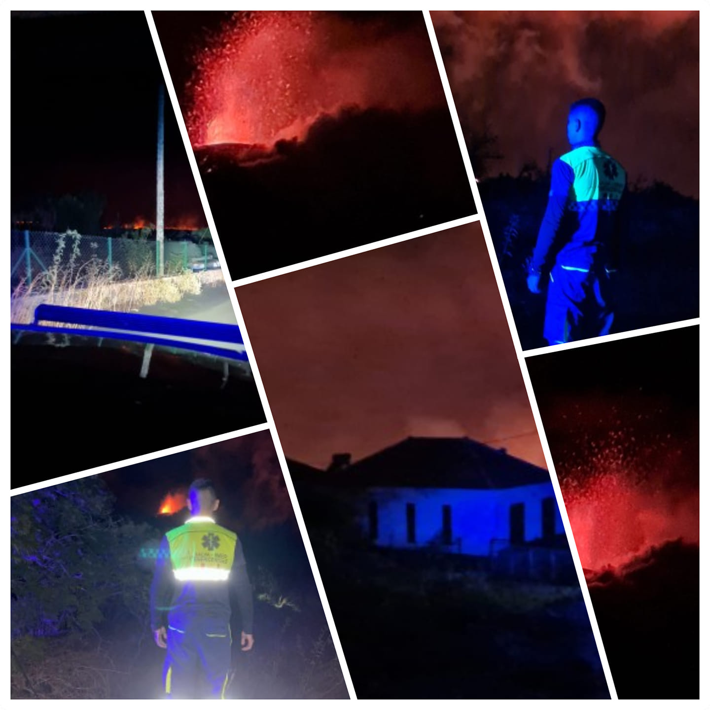
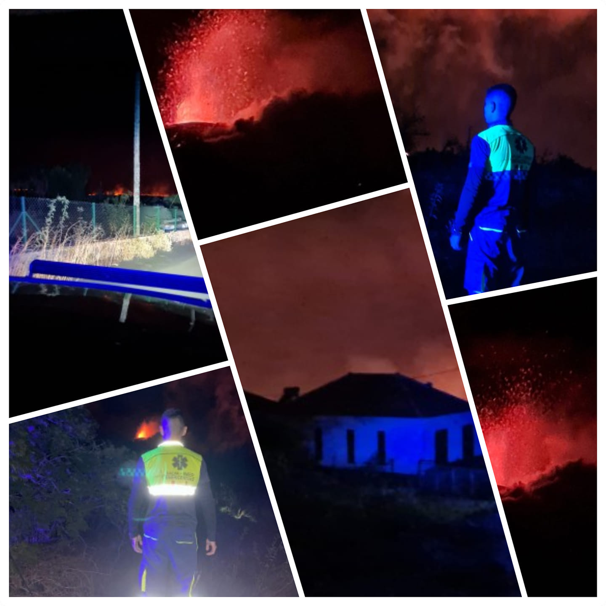

ES
ES
 EN
EN
 DE
DE
 FR
FR
 NO
NO
 IS
IS
Salva-Emer in Action
Testimonials and featured projects with images and videos of our successful interventions.
Emergency at La Palma Volcano
Organizer: RedCOE | Duration: 4 months | Team: 16 professionals
Salva-Emer played a key role during the volcanic crisis, providing safety and humanitarian support.
Phase 1
- Perimeter security in risk areas
- Evacuation of populations
- Supply distribution
Phase 2
- Transport and support for families
- Safe access for retrieving belongings
- Animal rescue
 

Wildfires in Tenerife and Gran Canaria
Organizer: Government of the Canary Islands
- Terrain inspection
- Evacuation of populations
- Animal rescue support and firefighting collaboration


DANA in the Valencian Community
Organizer: Valencian Government | Duration: 15 days | Team: 4 rescuers
- Debris removal
- Aid distribution
- Coordination with volunteers